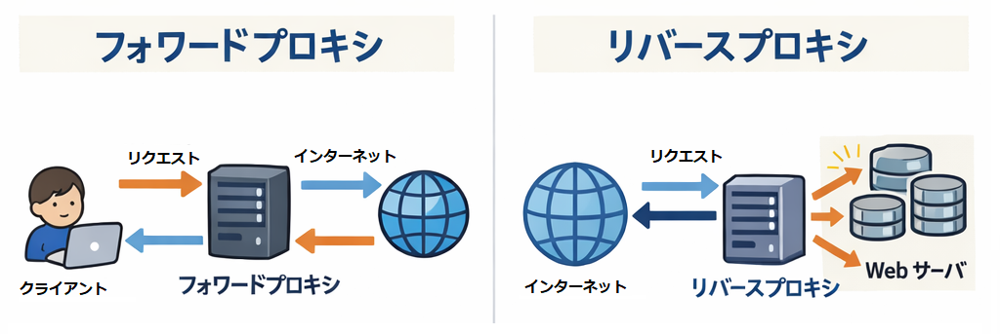

Web アプリを運用していると、ある時点で「外からのアクセスをどうさばくか」「HTTPS をどう終端するか」「複数台構成をどう見せるか」といった課題にぶつかります。そこで登場するのが リバースプロキシ（Reverse Proxy） です。
本記事では、リバースプロキシの基本と実務での使いどころを整理します。
リバースプロキシは「サーバ側の代理人」です。クライアント（ブラウザや API 呼び出し元）からのリクエストをいったん受け取り、裏側にあるアプリサーバへ中継します。
Client ---> Reverse Proxy ---> App Server(s)クライアントは「本当のアプリサーバ」の存在を意識せず、常にリバースプロキシにアクセスします。
大きなオフィスに訪問すると、最初に受付があります。来訪者（クライアント）は受付（リバースプロキシ）に要件を伝え、受付が担当部署（バックエンド）へ案内します。

プロキシには大きく 2 種類あります。
| 種類 | 代理する対象 | 典型例 |
|---|---|---|
| フォワードプロキシ | クライアント側の代理 | 社内ネットワークからの外部 Web アクセス制御 |
| リバースプロキシ | サーバ側の代理 | Web サービスのフロントに置く Nginx/Apache/ALB |
バックエンドが複数あっても、TLS 証明書の管理をリバースプロキシに集められます。アプリ側は HTTP だけで動かし、フロントで HTTPS を受ける構成が一般的です。
同じドメイン配下でも、パスでアプリを切り替えられます。
/api → API サーバ/ → フロントエンド（SPA/SSR）サーバ/admin → 管理画面同じアプリを複数台用意し、負荷を分散できます。単に順番に振り分けるだけでなく、プロキシは裏側のサーバが生きているか定期的に確認するヘルスチェック（死活監視）の機能も持ちます。これにより、「ダウンしているサーバにはリクエストを流さない」という賢い制御が可能になり、システムの可用性が向上します。
【注意】プロキシ自体が「単一障害点（SPOF）」になる
バックエンドを10台並べて可用性を高めても、玄関口であるリバースプロキシ（1台）がダウンすればサービス全体が停止します（SPOF: Single Point of Failure）。実務の大規模運用では、リバースプロキシ自身も冗長化するか、AWS ALB などのマネージドサービス（自動でスケール・冗長化される）を採用するのが一般的です。
アプリごとに実装しがちな「システム全体にまたがる共通処理（ログ・認証・キャッシュなど）」を、フロントに集約できます。
単一サーバ構成でも
複数サービスを 1 ドメインに集約
example.com は共通だが、裏側は複数のアプリBlue/Green / Canary リリース
+--> API Server (localhost:5000)
Client -> Proxy |
+--> Web Server (localhost:3000) Client -> Proxy -> App1 (10.0.0.11:8080)
\-> App2 (10.0.0.12:8080)
\-> App3 (10.0.0.13:8080)http://127.0.0.1:5000 で動いている（例：ASP.NET / Node / Python など）http://example.com にアクセスする/etc/nginx/conf.d/app.conf などに以下を置きます。
server {
listen 80;
server_name example.com;
location / {
proxy_pass http://127.0.0.1:5000;
# バックエンドに「元の情報」を渡す定番ヘッダ
proxy_set_header Host $host;
proxy_set_header X-Real-IP $remote_addr;
proxy_set_header X-Forwarded-For $proxy_add_x_forwarded_for;
proxy_set_header X-Forwarded-Proto $scheme;
# WebSocket を使う場合に必要になりがち
proxy_http_version 1.1;
proxy_set_header Upgrade $http_upgrade;
proxy_set_header Connection "upgrade";
}
}反映して起動します。
sudo nginx -t
sudo systemctl reload nginx疎通確認：
curl -i http://example.com/Ubuntu 系なら certbot を使うのが定番です（環境により手順は変わります）。
sudo apt update
sudo apt install -y certbot python3-certbot-nginx
sudo certbot --nginx -d example.com成功すると Nginx の設定に listen 443 ssl; が追加され、TLS 設定が入ります。
以降、アプリ側は HTTP のままでも、外からは HTTPS で提供できます。
「概念はわかったけど手元で動かしたい」場合の最小検証です。
ここではバックエンドを hashicorp/http-echo（受けた内容を返す）で代用します。
docker-compose.ymlservices:
proxy:
image: nginx:alpine
ports:
- "8080:80"
volumes:
- ./nginx.conf:/etc/nginx/conf.d/default.conf:ro
depends_on:
- app
app:
image: hashicorp/http-echo
command: ["-listen=:5000", "-text=hello from backend"]nginx.confserver {
listen 80;
location / {
proxy_pass http://app:5000;
proxy_set_header Host $host;
proxy_set_header X-Forwarded-For $proxy_add_x_forwarded_for;
}
}docker compose up -d
curl -i http://localhost:8080/hello from backend が返ってくれば成功です。
リバースプロキシ経由だと、バックエンドから見ると「アクセス元は常にプロキシのIP」に見えてしまいます。
そのため X-Forwarded-For などのヘッダを渡し、アプリ側はそれを参照する必要があります。
proxy_set_header X-Forwarded-For ...UseForwardedHeaders など）【致命的なセキュリティの罠】
X-Forwarded-Forは悪意のあるユーザーが手元で自由に改ざんして送信できます。アプリ側でこれを信用して IP 制限をかけると、簡単に突破（IPスプーフィング）されてしまいます。アプリ側で設定を有効にする際は、「信頼できるプロキシ（Trusted Proxies）の IP から来た通信の場合のみ、このヘッダを信用する」 という設定が必ずセットで必要です。
proxy_pass の末尾スラッシュ有無で挙動が変わることがあります。
location /api/ { proxy_pass http://backend/; }location /api/ { proxy_pass http://backend; }どちらが正しいかは「/api/xxx を backend 側で /xxx として扱うか /api/xxx のまま扱うか」で決まります。意図を明確にして設定しましょう。
自前のサーバに流す場合は proxy_set_header Host $host; とするのがセオリーですが、外部のクラウドサービス（AWS API Gateway, Cloud Run, Heroku, Vercelなど）をバックエンドにする場合はこの設定が原因でエラーになります。
クラウド側も「Hostヘッダ」を見てどのアプリにルーティングするかを判断しているため、クライアントの元のドメインをそのまま渡すと「知らないドメインだ」と弾かれてしまうのです。
この場合は、バックエンドのドメイン名に Host ヘッダを書き換える必要があります。
# $host ではなく、バックエンドのドメインを指定する
proxy_set_header Host "backend.example.com";リアルタイム通信機能でも、プロキシ特有のハマりどころがあります。
proxy_read_timeout）で切断されます。proxy_buffering off; やバックエンドからの X-Accel-Buffering: no ヘッダ付与）する必要があります。Nginx の client_max_body_size がデフォルトだと小さい（1MBなど）場合があります。ファイルアップロードがあるアプリではサイズ上限の緩和が必要です。
client_max_body_size 50m;TLS をプロキシで終端していると、バックエンドは「http で受けた」と認識し、リダイレクト生成時（Locationヘッダなど）に http スキームを使ってしまうことがあります。
X-Forwarded-Proto ヘッダでプロキシが受けたスキーム（https）を渡し、アプリ側でそれを信頼して反映させる設定が必要です。
運用規模が小さければ Nginx などのリバースプロキシで十分なことも多く、要件が増えると API Gateway を検討する、という理解でまずは問題ありません。
リバースプロキシは、単なる中継役ではなく、以下をまとめて引き受ける「玄関口」です。
玄関口である以上、「ここが落ちると全滅する（SPOF）」というインフラ上の弱点でもあります。 まずは 「クライアント → プロキシ → バックエンド」の流れを腹落ちさせ、次に「どの役割をプロキシに持たせたいか」「どれくらいの冗長性が必要か」を要件として整理すると、実務での設計がブレにくくなります。